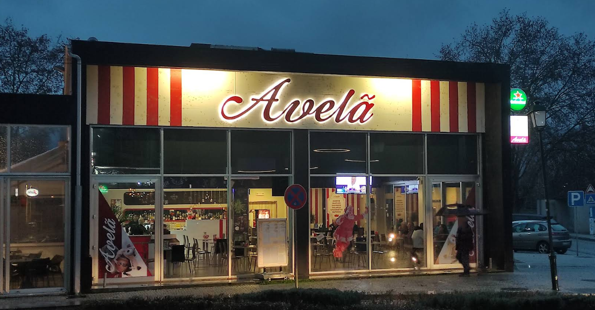
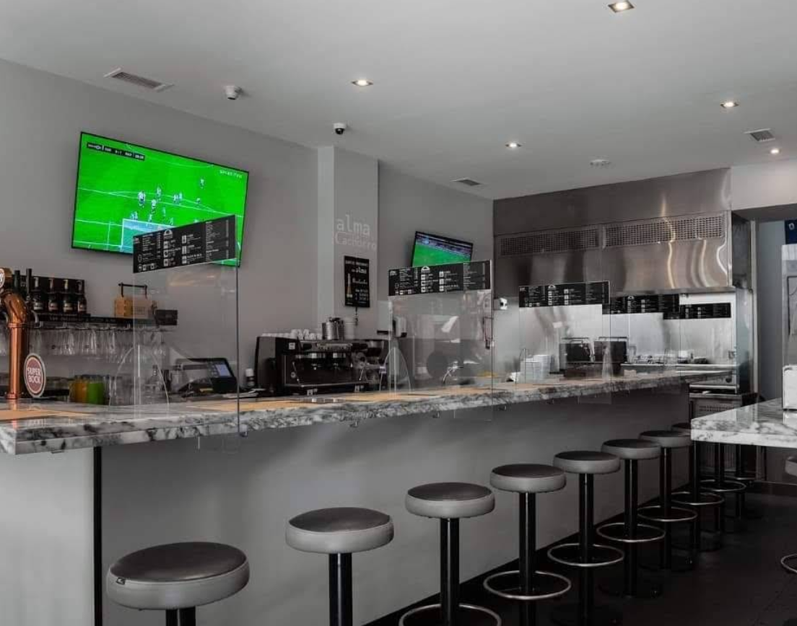
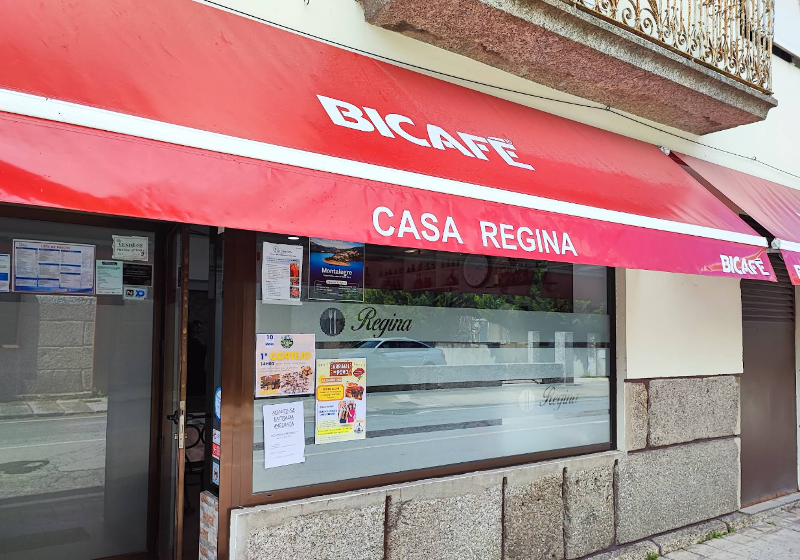
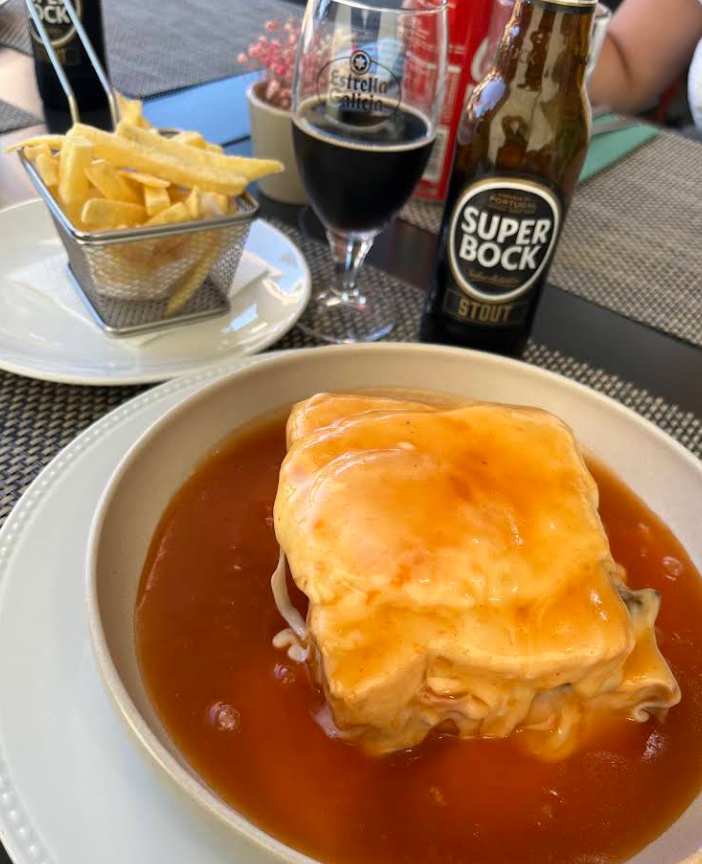

O teu diário de descobertas gastronómicas
Descobre restaurantes, guarda o que comeste e nunca mais percas um sítio bom.





Ainda sem restaurantes em destaque.
Sugere o primeiro restaurante
Tudo num só lugar
Descobre restaurantes
Uma coleção curada, de tapas a ramen. Encontra o sítio certo para cada ocasião.
Cria listas
Organiza por tema, ocasião ou humor e partilha com amigos.
Avalia e escreve reviews
Guarda o que comeste e o que achaste.
Gira a roleta
Sem ideias? A sorte escolhe entre os restaurantes da tua região.
Qual é o teu paladar?
Escolhe os sabores que te definem. Usamos isto para afinar as sugestões.
Escolhe pelo menos um sabor.
Perguntas frequentes
Tudo o que precisas de saber para começar.
O que é o FoodLister?
Uma plataforma de curadoria de restaurantes. Descobre lugares, avalia as tuas experiências, cria listas personalizadas e decide onde comer, na roleta ou no mapa.
É gratuito?
Sim. O plano Free inclui o essencial: criar listas, avaliar restaurantes, filtros básicos e colaborar em listas. Podes passar a Premium ou Pro para funcionalidades avançadas.
O que são as listas e como crio uma?
Organizam restaurantes por tema, ocasião ou humor. Inicia sessão, abre Listas e usa o botão criar. Depois adiciona restaurantes e partilha com amigos.
O que é a roleta de descoberta?
Quando não sabes onde comer, a roleta escolhe por ti entre os restaurantes da tua região.
Posso adicionar um restaurante que não existe?
Sim. Se ainda não estiver na base, adiciona-o pelo botão criar no menu.
O que são as refeições?
A secção Refeições permite agendar saídas e planear com quem e onde vais comer.